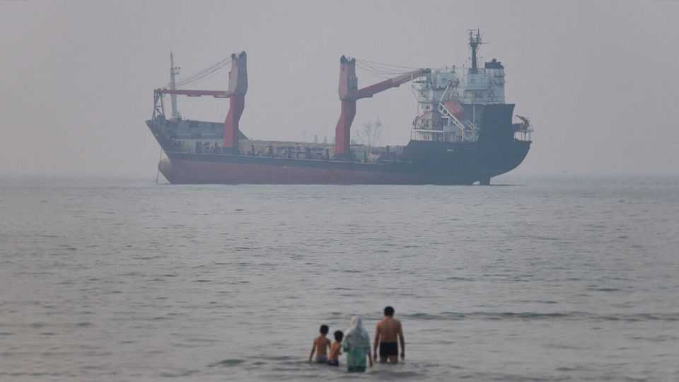

Donald Trump’s hope for a new Middle East is premature
Recent attacks underscore the limits of diplomacy between Iran and America
July 2nd 2026

TWO PARALLEL Middle Easts exist. One is a hopeful realm of diplomacy. America and Iran are planning talks to implement the memorandum of understanding (MoU) signed on June 17th. J.D. Vance, America’s vice-president, is eager to set up a hotline whereby the Pentagon can talk to the Islamic Revolutionary Guard Corps (IRGC), the regime’s elite defenders. Meanwhile Israel and Lebanon have signed their first formal diplomatic agreement in 43 years, which commits them to work towards a lasting peace.
Then there is the real world. Iran is still attacking commercial ships in the Strait of Hormuz and trading fire with America and its allies. Israel is still bombing Lebanon, despite a nominal ceasefire, and occupying the south. Hizbullah, Iran’s Lebanese proxy, is threatening a new civil war. For now, these two regions uneasily coexist: there will be both more jaw-jaw and more war-war. But recent days underscore how little progress diplomacy has made.
The latest dust-up between America and Iran began on June 25th, when the IRGC attacked a Singapore-flagged container ship, the Ever Lovely, as it exited the Strait of Hormuz. The next day America bombed military targets in southern Iran, which, over the weekend, then fired missiles and drones at Bahrain and Kuwait. On June 28th the Americans signalled that the fighting was over and that vessels could “move freely” through the strait.
The first part of the American claim is probably true. The tit-for-tat strikes were limited in size and scope—a violation of the ceasefire, yes, but a modest one. The second looks more dubious. With the usual shipping lanes through Hormuz blocked by mines, vessels must take one of two alternative routes. Iran demands that they use the northern passage through its territorial waters, which requires co-ordination with the IRGC. Last week, however, Oman and the International Maritime Organisation, a UN agency, started an effort to evacuate some 600 stranded vessels from the Persian Gulf that also uses the southern route, which goes through Omani waters.
Though the MoU called for Hormuz to reopen within 30 days, Iran is bent on keeping its chokehold. The southern route threatens that control; hence the attack on the Ever Lovely, which was using it. A hotline would not have prevented conflict: there is little to discuss when America and Iran have incompatible goals in Hormuz.
Oil markets shrugged off the incident. But traffic through Hormuz has dropped. At least 62 ships transited the day before the attack on the Ever Lovely, according to Windward, a shipping-analytics firm. That number fell to 42 on June 30th (and most used the northern route).
While this was happening, Israel and Lebanon announced their deal on June 26th. On paper, it looks ambitious. It commits the Lebanese government to disarm Hizbullah. If it does, the Israeli army will conduct phased withdrawals from territory it occupies in southern Lebanon. It also seems at odds with the MoU, which, at least in Iran’s reading, calls for a ceasefire and a full Israeli pull-out. America insists it does not—and the language is vague enough to support both claims.
Seen from Jerusalem, the deal solves three immediate problems. First, it separates the two wars: Israel’s actions in Lebanon will be governed by this agreement, not the MoU. Second, withdrawing some troops would ease the strain on the Israeli army. Third, it helps Binyamin Netanyahu, the prime minister, who faces a tough election this autumn. The accord does not specify a deadline for Israeli withdrawal; the process will probably take years. Mr Netanyahu can tell voters that Israel will maintain its presence in Lebanon for now.
The deal is far more controversial in Lebanon. Critics say the lack of a timetable means it may wind up legitimising another long Israeli occupation. It also bars the Lebanese government from “hostile or adverse actions” against Israel at the UN or other international bodies, a remarkable concession from a sovereign state (Israel is similarly constrained). Supporters argue that direct talks with Israel are overdue, and that the alternative is to let Iran intercede on behalf of a militia—also an infringement of Lebanese sovereignty.
Almost everyone is sceptical that the agreement will be implemented in full. This is hardly the first time conflict between Israel and Hizbullah has led to talk of disarming the militia. After the deal was signed Hassan Fadlallah, a Hizbullah MP, warned that Lebanon’s government could not enforce it “unless they go, with American support, to civil war”. Such threats resonate in a country that endured a ruinous sectarian conflict from 1975 until 1990.
All of this may set back talks between America and Iran that are meant to reach a comprehensive nuclear deal within 60 days. On June 29th Iran’s foreign-ministry spokesman said there could be no direct talks until the MoU had been fully implemented—including the Lebanon bit.
When the MoU was signed, American officials were ebullient about a new era in relations between America and Iran. Two weeks on, it looks much like the old one. ■
Sign up to the Middle East Dispatch, a weekly newsletter that keeps you in the loop on a fascinating, complex and consequential part of the world.